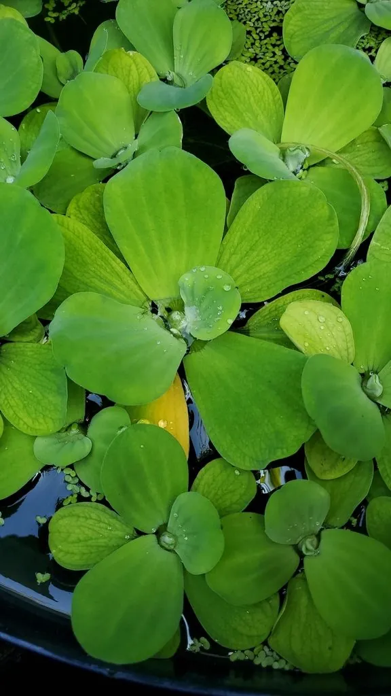

水生植物 · 植物界
大漂 Pistia stratiotes

天南星科大漂属漂浮水生植物，叶片莲座状、密生绒毛，形似绿色玫瑰，原产热带，是常见的水景植物和净水材料。
- 分类
- 门被子植物门纲单子叶植物纲目泽泻目科天南星科属大漂属
- 栖息环境
- 热带、亚热带池塘、沟渠和水田，喜温暖、富营养
- 地理分布
- 原产热带和亚热带，中国南方常见，北方需温室越冬
- 保护级别
- 暂无评估；部分地区逸生为入侵植物
物种志
大漂为天南星科大漂属的漂浮水生植物，无茎，叶片莲座状排列，倒卵形或楔形，长 5–15 厘米，表面灰绿色，密生白色短绒毛，叶脉平行，边缘波状。叶片浮于水面，形似一朵绿色的玫瑰。花小，生于叶腋的佛焰苞内，花期夏季；果实为浆果。
大漂原产热带和亚热带地区，中国南方池塘、沟渠和水田中常见，喜温暖、阳光充足和富含养分的水体，繁殖极快。它叶片莲座状、密生绒毛，是水景中常见的漂浮植物，也可用于吸收水体中的氮、磷；但过度繁殖会堵塞水道、影响航运和水生生物。栽培靠匍匐茎分株繁殖，极易蔓延；在温暖水域需注意控制，防止逸生为入侵植物。
形态与习性
- 叶径莲座直径 10–25 厘米
- 叶片倒卵形，密生白色短绒毛
- 花期夏季，花小、生于叶腋
- 水深漂浮于水面，不扎根
- 光照喜充足阳光
- 繁殖匍匐茎分株，蔓延极快
- 主要用途水景观赏、吸收氮磷
- 注意过度繁殖会堵塞水道
趣味知识
- 大漂的叶片莲座状排列，密生白色绒毛，像一朵绿色玫瑰。
- 它靠匍匐茎分株繁殖，在温暖水域能迅速铺满水面。
- 大漂能吸收水中氮、磷，但过度繁殖会堵塞水道。